Pre-lecture materials
Acknowledgements
Material for this lecture was borrowed and adopted from
Learning objectives
At the end of this lesson you will:
Be able to state best practices for:
- Considerations around building ethical data analyses
- Sharing data
- Creating data visualizations
Best practices for data ethics
In philosophy departments, classes and modules centered around data ethics are widely discussed.
The ethical challenges around working with data are not fundamentally different from the ethical challenges philosophers have always faced.
However, putting an ethical framework around building data analyses in practice is indeed new for most data scientists, and for many of us, we are woefully under-prepared to teach so far outside our comfort zone.
That being said, we can provide some thoughts on how to approach a data science problem using a philosophical lens.
Defining ethics
We start with a grounding in the definition of Ethics:
Ethics, also called moral philosophy, has three main branches:
- Applied ethics “is a branch of ethics devoted to the treatment of moral problems, practices, and policies in personal life, professions, technology, and government.”
- Ethical theory “is concerned with the articulation and the justification of the fundamental principles that govern the issues of how we should live and what we morally ought to do. Its most general concerns are providing an account of moral evaluation and, possibly, articulating a decision procedure to guide moral action.”
- Metaethics “is the attempt to understand the metaphysical, epistemological, semantic, and psychological, presuppositions and commitments of moral thought, talk, and practice.”
While, unfortunately, there are myriad examples of ethical data science problems (see, for example, blog posts bookclub and data feminism), here I aim to connect some of the broader data science ethics issues with the existing philosophical literature.
Note, I am only scratching the surface and a deeper dive might involve education in related philosophical fields (epistemology, metaphysics, or philosophy of science), philosophical methodologies, and ethical schools of thought, but you can peruse all of these through, for example, a course or readings introducing the discipline of philosophy.
Below we provide some thoughts on how to approach a data science problem using a philosophical lens.
Case Study
We begin by considering a case study around ethical data analyses.
Many ethics case studies provided in a classroom setting describe algorithms built on data which are meant to predict outcomes.
Large scale algorithmic decision making presents particular ethical predicaments because of both the scale of impact and the “black-box” sense of how the algorithm is generating predictions.
Consider the well-known issue of using facial recognition software in policing.
There are many questions surrounding the policing issue:
- What are the action options with respect to the outcome of the algorithm?
- What are the good and bad aspects of each action and how are these to be weighed against each other?

[Source: CNN]
The two main ethical concerns surrounding facial recognition software break down into
- How the algorithms were developed?
- How the algorithm is used?
When thinking about the questions below, reflect on the good aspects and the bad aspects and how one might weight the good versus the bad.
Creating the algorithm
- What data should be used to train the algorithm?
- If the accuracy rates of the algorithm differ based on the demographics of the subgroups within the data, is more data and testing required?
- Who and what criteria should be used to tune the algorithm?
- Who should be involved in decisions on the tuning parameters of the algorithm?
- Which optimization criteria should be used (e.g., accuracy? false positive rate? false negative rate?)
- Issues of access:
- Who should own or have control of the facial image data?
- Do individuals have a right to keep their facial image private from being in databases?
- Do individuals have a right to be notified that their facial image is in the data base? For example, if I ring someone’s doorbell and my face is captured in a database, do I need to be told? [While traditional human subjects and IRB requirements necessitate consent to be included in any research project, in most cases it is legal to photograph a person without their consent.]
- Should the data be accessible to researchers working to make the field more equitable? What if allowing accessibility thereby makes the data accessible to bad actors?
- Who should own or have control of the facial image data?
Using the algorithm
- Issues of personal impact:
- The software might make it easier to accurately associate an individual with a crime, but it might also make it easier to mistakenly associate an individual with a crime. How should the pro vs con be weighed against each other?
- Do individuals have a right to know, correct, or delete personal information included in a database?
- Issues of societal impact:
- Is it permissible to use a facial recognition software which has been trained primarily on Caucasian faces, given that this results in false positive and false negative rates that are not equally dispersed across racial lines?
- While the software might make it easier to protect against criminal activity, it also makes it easier to undermine specific communities when their members are mistakenly identified with criminal activity. How should the pro vs con of different communities be weighed against each other?
- Issues of money:
- Is it permissible for a software company to profit from an algorithm while having no financial responsibility for its misuse or negative impacts?
- Who should pay the court fees and missed work hours of those who were mistakenly accused of crimes?
To settle the questions above, we need to study various ethical theories, and it turns out that the different theories may lead us to different conclusions. As non-philosophers, we recognize that the suggested readings and ideas may come across as overwhelming. If you are overwhelmed, we suggest that you choose one ethical theory, think carefully about how it informs decision making, and help your students to connect the ethical framework to a data science case study.
Final thoughts
This is a challenging topic, but as you analyze data, ask yourself the following broad questions to help you with ethical considerations around the data analysis.
- Why are we producing this knowledge?
- For whom are we producing this knowledge?
- What communities do they serve?
- Which stakeholders need to be involved in making decisions in and around the data analysis?
Best practices for sharing data
Data sharing is an essential element of the scientific method, imperative to ensure transparency and reproducibility.
Different areas of research collect fundamentally different types of data, such as tabular data, time series data, image data, or genomic data. These types of data differ greatly in size and require different approaches for sharing.
In this section, I outline broad best practices to make your data publicly accessible and usable, generally and for several specific kinds of data.
FAIR principles
Sharing data proves more useful when others can easily find and access, interpret, and reuse the data. To maximize the benefit of sharing your data, follow the findable, accessible, interoperable, and reusable (FAIR) guiding principles of data sharing, which optimize reuse of generated data.
- Findable. The first step in (re)using data is to find them. Metadata and data should be easy to find for both humans and computers. Machine-readable metadata are essential for automatic discovery of datasets and services, so this is an essential component of the FAIRification process.
- Accessible. Once the user finds the required data, she/he needs to know how can they be accessed, possibly including authentication and authorization.
- Interoperable. The data usually need to be integrated with other data. In addition, the data need to interoperate with applications or workflows for analysis, storage, and processing.
- Reusable. The ultimate goal of FAIR is to optimize the reuse of data. To achieve this, metadata and data should be well-described so that they can be replicated and/or combined in different settings.
Best practices for data visualizations
Motiviation
“The greatest value of a picture is when it forces us to notice what we never expected to see.” -John W. Tukey

Mistakes, biases, systematic errors and unexpected variability are commonly found in data regardless of applications. Failure to discover these problems often leads to flawed analyses and false discoveries.
As an example, consider that measurement devices sometimes fail and not all summarization procedures, such as the mean() function in R, are designed to detect these. Yet, these functions will still give you an answer.
Furthermore, it may be hard or impossible to notice an error was made just from the reported summaries.
Data visualization is a powerful approach to detecting these problems. We refer to this particular task as exploratory data analysis (EDA), coined by John Tukey.
On a more positive note, data visualization can also lead to discoveries which would otherwise be missed if we simply subject the data to a battery of statistical summaries or procedures.
When analyzing data, we often make use of exploratory plots to motivate the analyses we choose.
In this section, we will discuss some types of plots to avoid, better ways to visualize data, some principles to create good plots, and ways to use ggplot2 to create expository (intended to explain or describe something) graphs.
The following figure is from Lippmann et al. 2006:
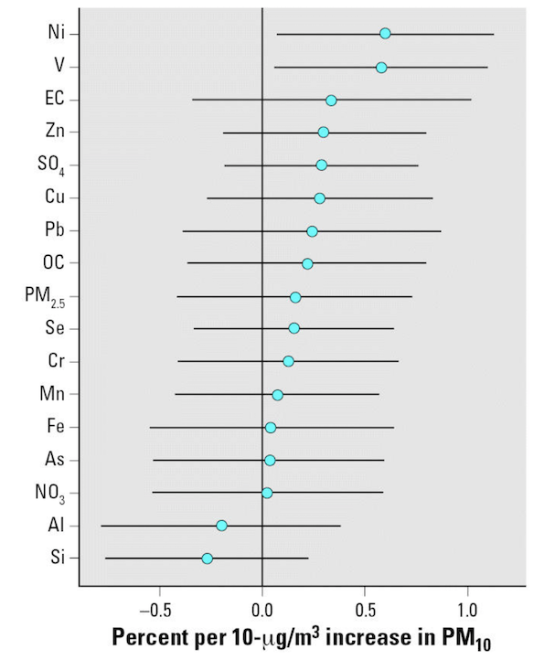
The following figure is from Dominici et al. 2007, in response to the work by Lippmann et al. above.
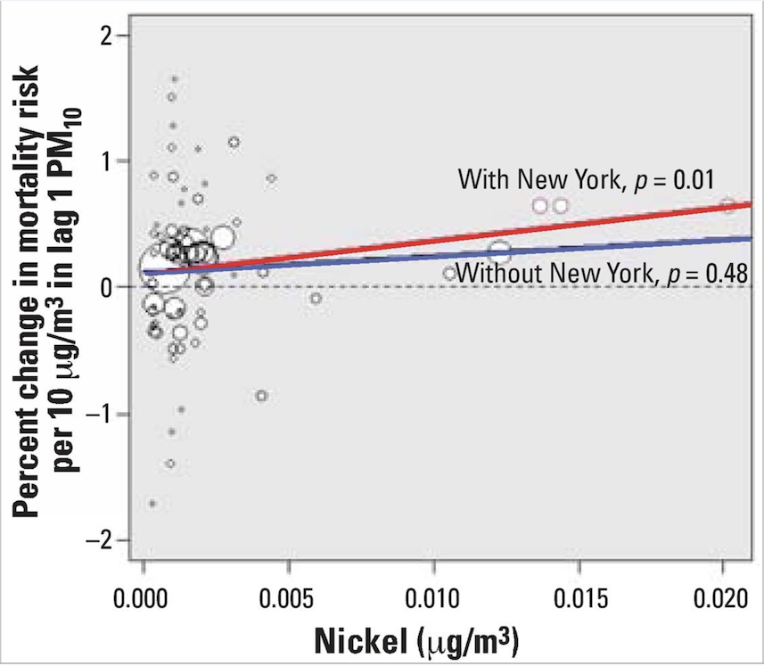
Elevated levels of Ni and V PM2.5 chemical components in New York are likely attributed to oil-fired power plants and emissions from ships burning oil, as noted by Lippmann et al. (2006).
Generating data visualizations
In order to determine the effectiveness or quality of a visualization, we need to first understand three things:
- What is the question we are trying to answer?
- Why are we building this visualization?
- For whom are we producing this data visualization for? Who is the intended audience to consume this visualization?
No plot (or any statistical tool, really) can be judged without knowing the answers to those questions. No plot or graphic exists in a vacuum. There is always context and other surrounding factors that play a role in determining a plot’s effectiveness.
Conversely, high-quality, well-made visualizations usually allow one to properly deduce what question is being asked and who the audience is meant to be. A good visualization tells a complete story in a single frame.
The act of visualizing data typically proceeds in two broad steps:
- Given the question and the audience, what type of plot should I make?
- Given the plot I intend to make, how can I optimize it for clarity and effectiveness?
Data viz principles
Developing plots
Initially, one must decide what information should be presented. The following principles for developing analytic graphics come from Edward Tufte’s book Beautiful Evidence.
- Show comparisons
- Show causality, mechanism, explanation
- Show multivariate data
- Integrate multiple modes of evidence
- Describe and document the evidence
- Content is king - good plots start with good questions
Optimizing plots
- Maximize the data/ink ratio – if “ink” can be removed without reducing the information being communicated, then it should be removed.
- Maximize the range of perceptual conditions – your audience’s perceptual abilities may not be fully known, so it’s best to allow for a wide range, to the extent possible (or knowable).
- Show variation in the data, not variation in the design.
What’s sub-optimal about this plot?
d <- airquality %>%
mutate(Summer = ifelse(Month %in% c(7, 8, 9), 2, 3))
with(d, {
plot(Temp, Ozone, col = unclass(Summer), pch = 19, frame.plot = FALSE)
legend("topleft", col = 2:3, pch = 19, bty = "n",
legend = c("Summer", "Non-Summer"))
})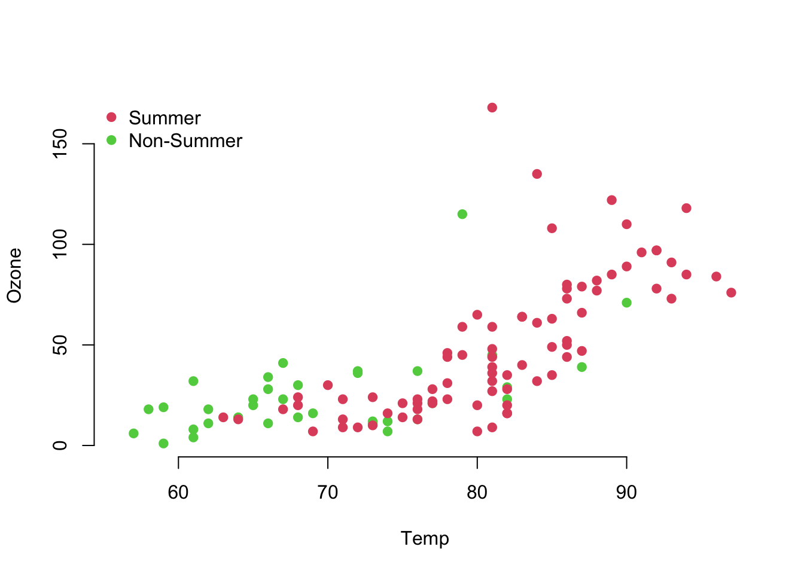
What’s sub-optimal about this plot?
airquality %>%
mutate(Summer = ifelse(Month %in% c(7, 8, 9),
"Summer", "Non-Summer")) %>%
ggplot(aes(Temp, Ozone)) +
geom_point(aes(color = Summer), size = 2) +
theme_minimal()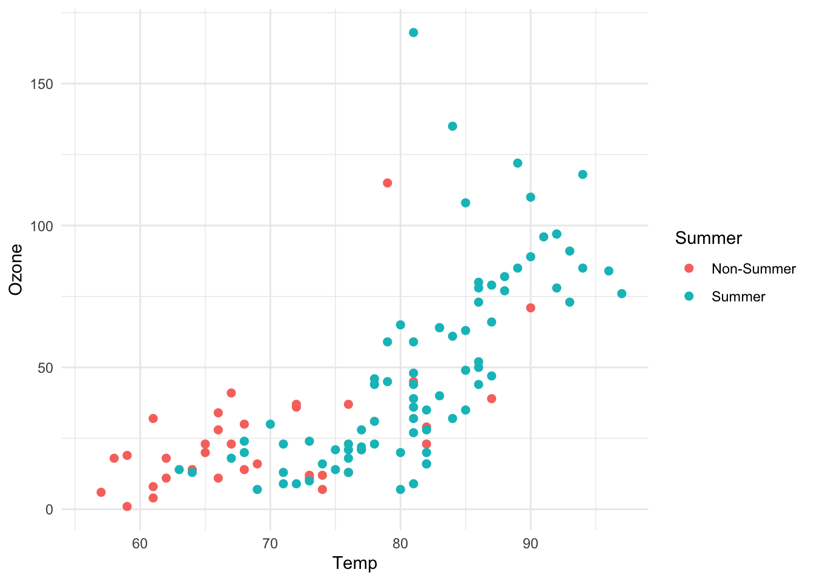
Some of these principles are taken from Edward Tufte’s Visual Display of Quantitative Information:
Plots to Avoid
This section is based on a talk by Karl W. Broman titled “How to Display Data Badly,” in which he described how the default plots offered by Microsoft Excel “obscure your data and annoy your readers” (here is a link to a collection of Karl Broman’s talks).
Karl’s lecture was inspired by the 1984 paper by H. Wainer: How to display data badly. American Statistician 38(2): 137–147.
Dr. Wainer was the first to elucidate the principles of the bad display of data.
However, according to Karl Broman, “The now widespread use of Microsoft Excel has resulted in remarkable advances in the field.”
Here we show examples of “bad plots” and how to improve them in R.
- Display as little information as possible.
- Obscure what you do show (with chart junk).
- Use pseudo-3D and color gratuitously.
- Make a pie chart (preferably in color and 3D).
- Use a poorly chosen scale.
- Ignore significant figures.
Examples
Here are some examples of bad plots and suggestions on how to improve
Pie charts
Let’s say we are interested in the most commonly used browsers. Wikipedia has a table with the “usage share of web browsers” or the proportion of visitors to a group of web sites that use a particular web browser from July 2017.
browsers <- c(Chrome=60, Safari=14, UCBrowser=7,
Firefox=5, Opera=3, IE=3, Noinfo=8)
browsers.df <- gather(data.frame(t(browsers)),
"browser", "proportion") Let’s say we want to report the results of the usage. The standard way of displaying these is with a pie chart:
pie(browsers,main="Browser Usage (July 2022)")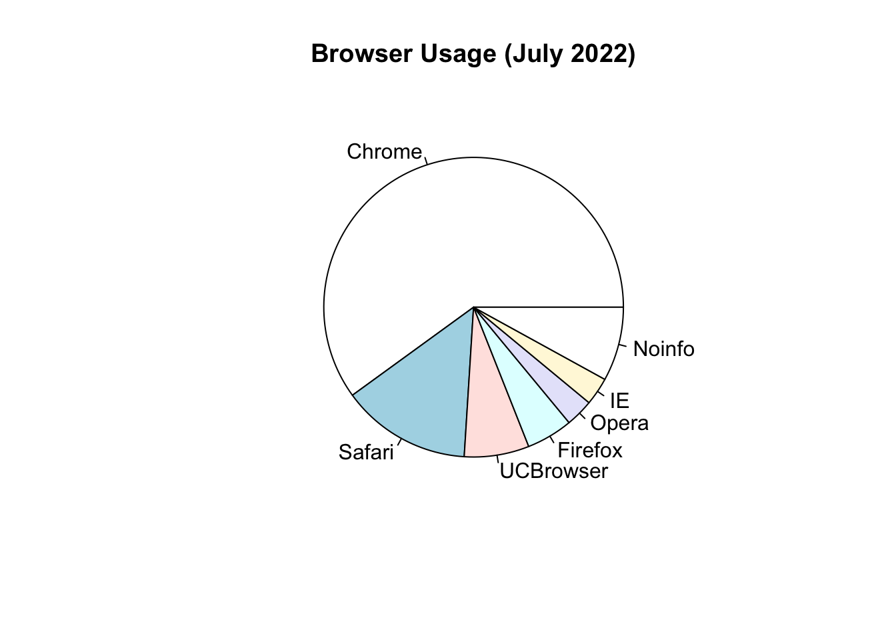
If we look at the help file for pie():
?pieIt states:
“Pie charts are a very bad way of displaying information. The eye is good at judging linear measures and bad at judging relative areas. A bar chart or dot chart is a preferable way of displaying this type of data.”
To see this, look at the figure above and try to determine the percentages just from looking at the plot. Unless the percentages are close to 25%, 50% or 75%, this is not so easy. Simply showing the numbers is not only clear, but also saves on printing costs.
Instead of pie charts, try bar plots
If you do want to plot them, then a barplot is appropriate. Here we use the geom_bar() function in ggplot2. Note, there are also horizontal lines at every multiple of 10, which helps the eye quickly make comparisons across:
p <- browsers.df %>%
ggplot(aes(x=reorder(browser, -proportion),
y=proportion)) +
geom_bar(stat="identity")
p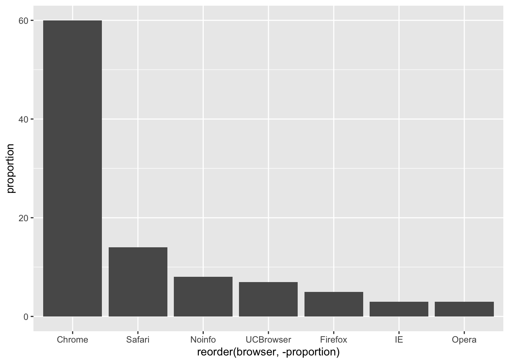
Notice that we can now pretty easily determine the percentages by following a horizontal line to the x-axis.
Polish your plots
While this figure is already a big improvement over a pie chart, we can do even better. When you create figures, you want your figures to be self-sufficient, meaning someone looking at the plot can understand everything about it.
Some possible critiques are:
- make the axes bigger
- make the labels bigger
- make the labels be full names (e.g. “Browser” and “Proportion of users”, ideally with units when appropriate)
- add a title
Let’s explore how to do these things to make an even better figure.
To start, go to the help file for theme()
?ggplot2::themeWe see there are arguments with text that control all the text sizes in the plot. If you scroll down, you see the text argument in the theme command requires class element_text. Let’s try it out.
To change the x-axis and y-axis labels to be full names, use xlab() and ylab()
p <- p + xlab("Browser") +
ylab("Proportion of Users")
p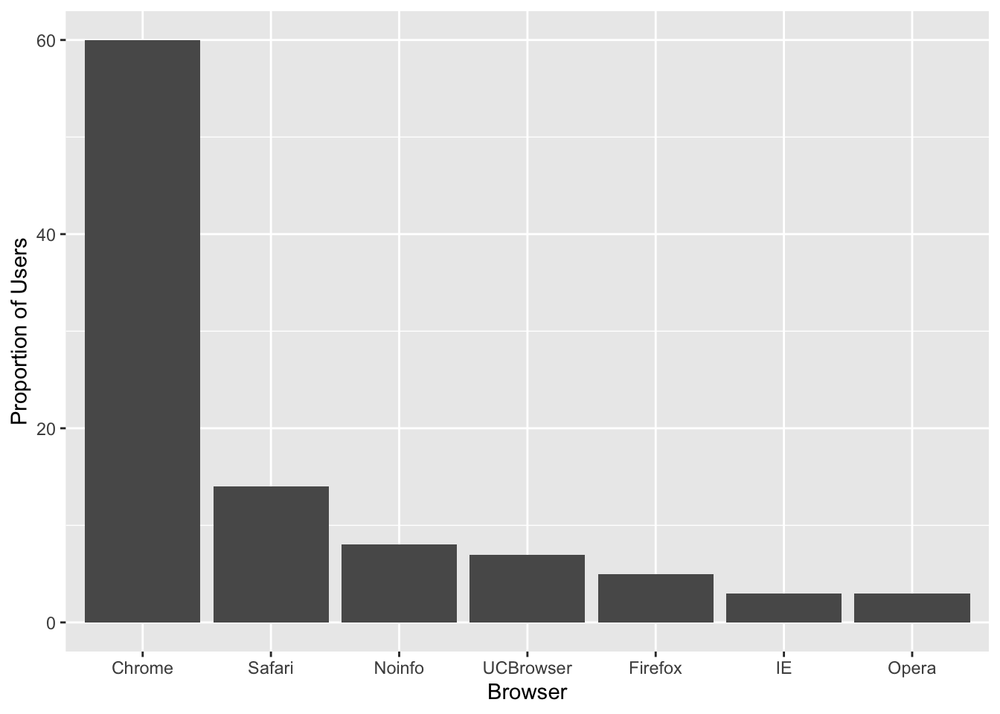
Maybe a title
p + ggtitle("Browser Usage (July 2022)")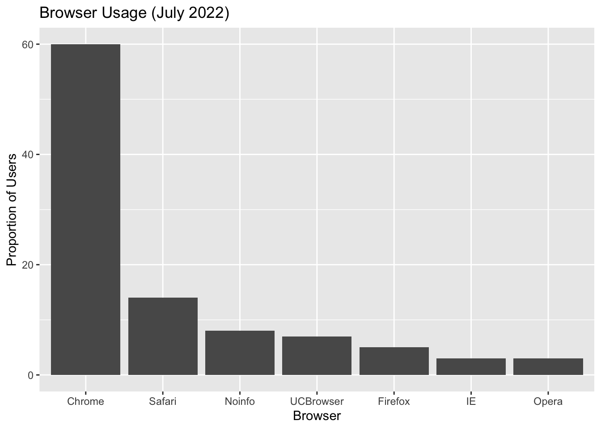
Next, we can also use the theme() function in ggplot2 to control the justifications and sizes of the axes, labels and titles.
To center the title
p + ggtitle("Browser Usage (July 2022)") +
theme(plot.title = element_text(hjust = 0.5))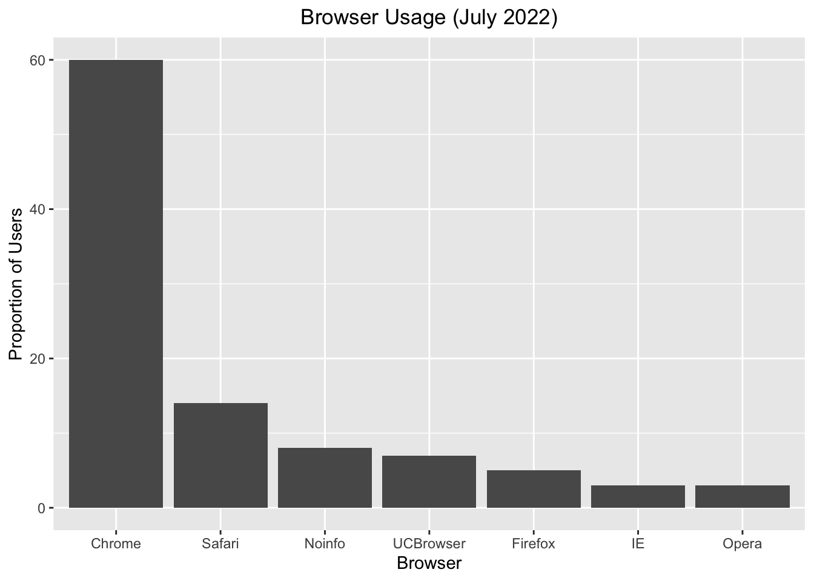
To create bigger text/labels/titles:
p <- p + ggtitle("Browser Usage (July 2022)") +
theme(plot.title = element_text(hjust = 0.5),
text = element_text(size = 15))
p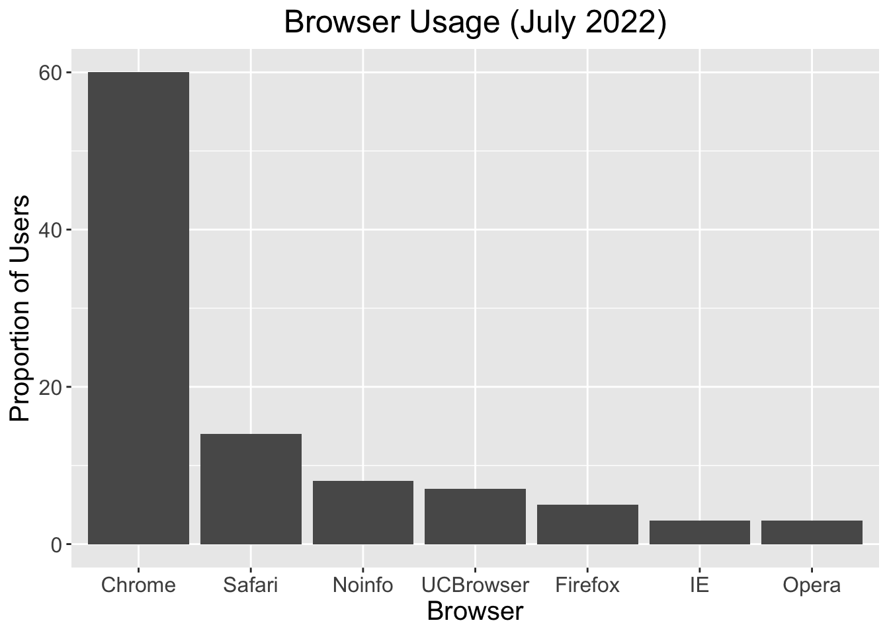
“I don’t like that theme”
p + theme_bw()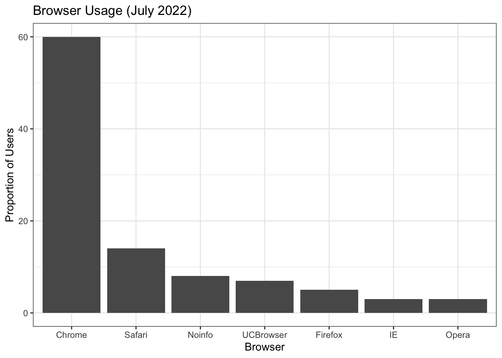
p + theme_dark()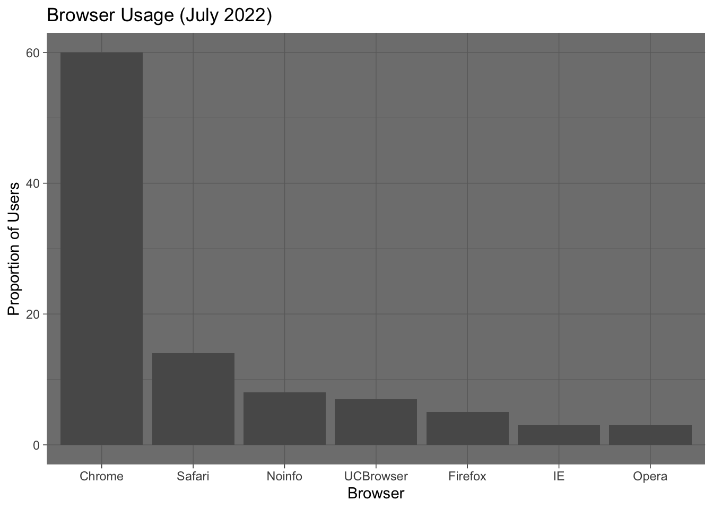
p + theme_classic() # axis lines!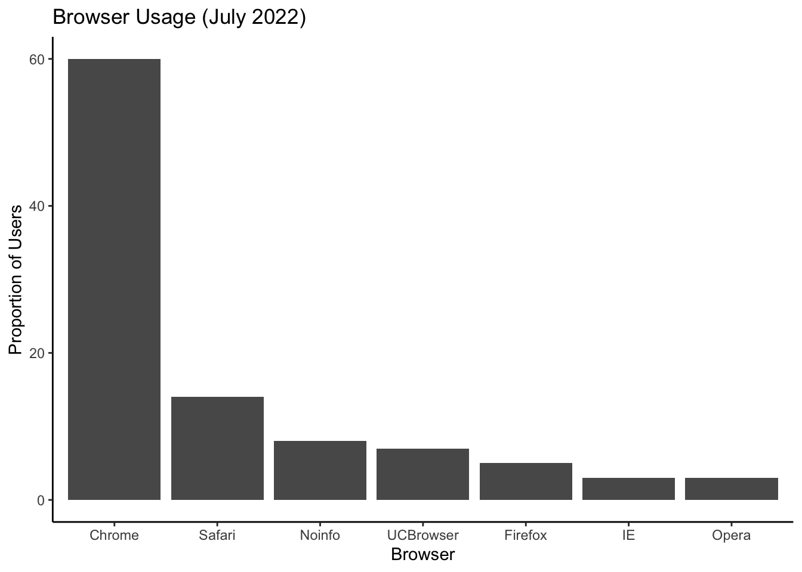
p + ggthemes::theme_base()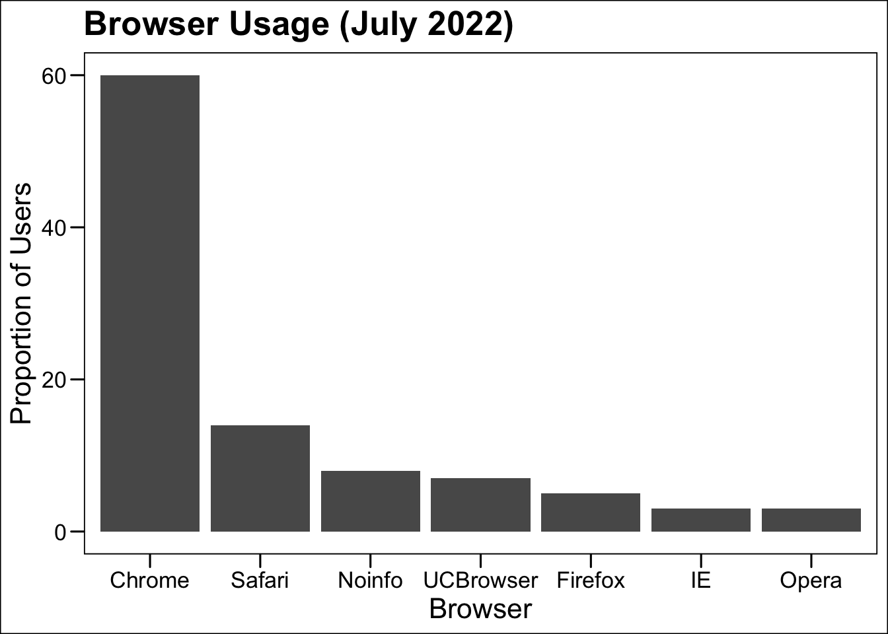
3D barplots
Please, avoid a 3D version because it obfuscates the plot, making it more difficult to find the percentages by eye.

Donut plots
Even worse than pie charts are donut plots.

The reason is that by removing the center, we remove one of the visual cues for determining the different areas: the angles. There is no reason to ever use a donut plot to display data.
Why are pie/donut charts so common?
https://blog.usejournal.com/why-humans-love-pie-charts-9cd346000bdc
Barplots as data summaries
While barplots are useful for showing percentages, they are incorrectly used to display data from two groups being compared. Specifically, barplots are created with height equal to the group means; an antenna is added at the top to represent standard errors. This plot is simply showing two numbers per group and the plot adds nothing:

Instead of bar plots for summaries, try box plots
If the number of points is small enough, we might as well add them to the plot. When the number of points is too large for us to see them, just showing a boxplot is preferable.
Let’s recreate these barplots as boxplots and overlay the points. We will simulate similar data to demonstrate one way to improve the graphic above.
set.seed(1000)
dat <- data.frame("Treatment" = rnorm(10, 30, sd=4),
"Control" = rnorm(10, 36, sd=4))
gather(dat, "type", "response") %>%
ggplot(aes(type, response)) +
geom_boxplot() +
geom_point(position='jitter') +
ggtitle("Response to drug treatment")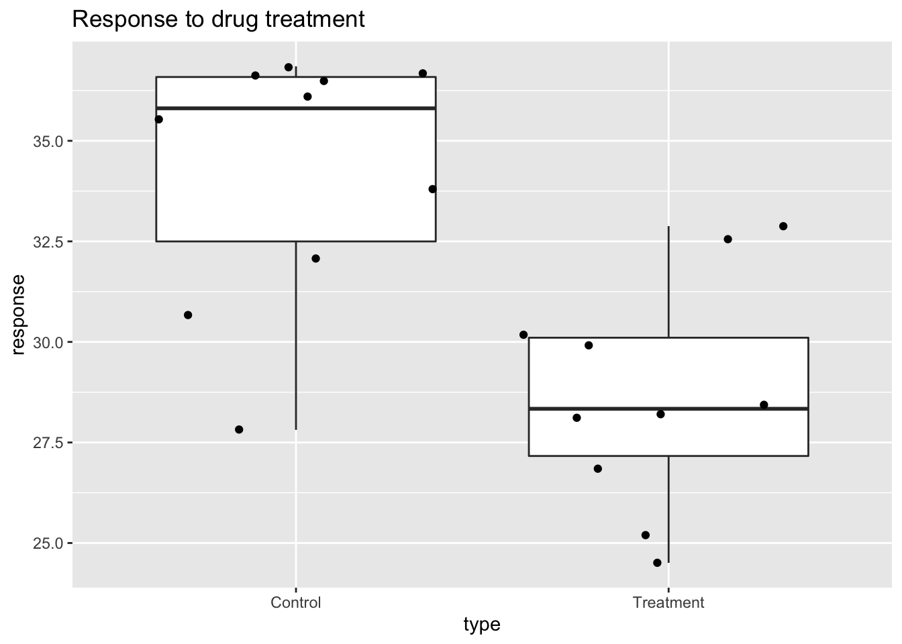
Notice how much more we see here: the center, spread, range, and the points themselves. In the barplot, we only see the mean and the standard error (SE), and the SE has more to do with sample size than with the spread of the data.
This problem is magnified when our data has outliers or very large tails. For example, in the plot below, there appears to be very large and consistent differences between the two groups:

However, a quick look at the data demonstrates that this difference is mostly driven by just two points.
set.seed(1000)
dat <- data.frame("Treatment" = rgamma(10, 10, 1),
"Control" = rgamma(10, 1, .01))
gather(dat, "type", "response") %>%
ggplot(aes(type, response)) +
geom_boxplot() +
geom_point(position='jitter')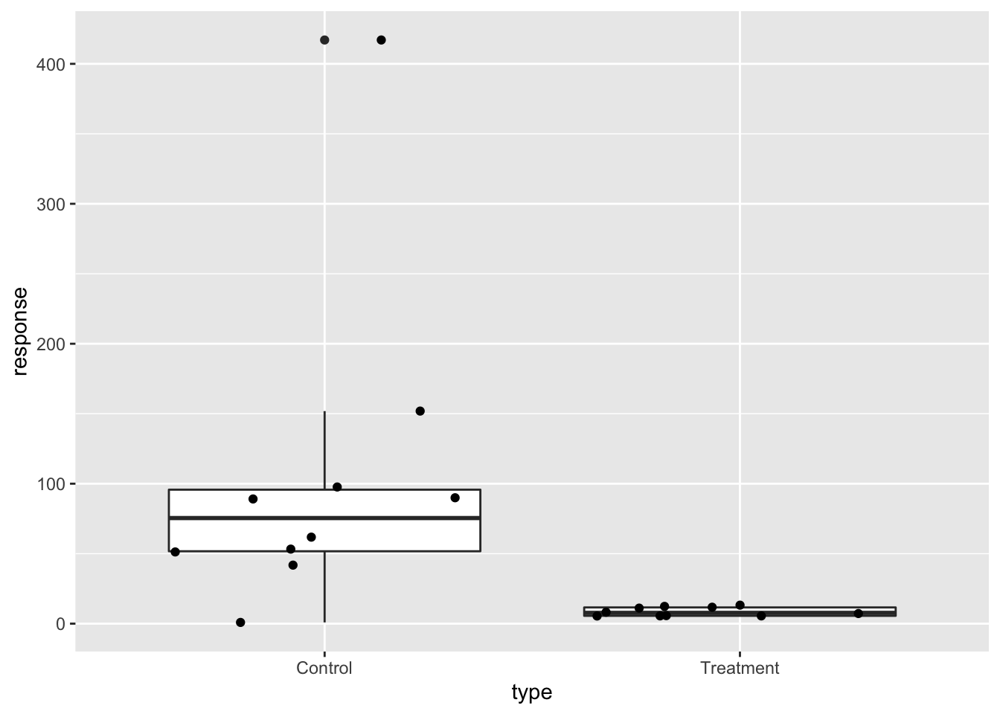
Use log scale if data includes outliers
A version showing the data in the log-scale is much more informative.
gather(dat, "type", "response") %>%
ggplot(aes(type, response)) +
geom_boxplot() +
geom_point(position='jitter') +
scale_y_log10()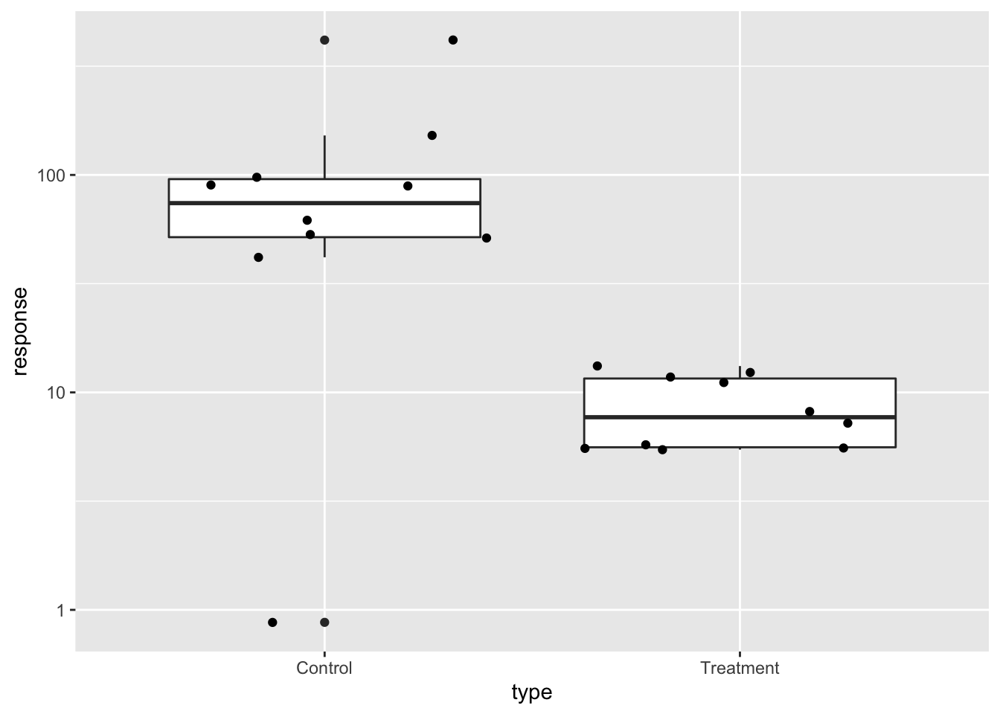
Barplots for paired data
A common task in data analysis is the comparison of two groups. When the dataset is small and data are paired, such as the outcomes before and after a treatment, two-color barplots are unfortunately often used to display the results.

Instead of paired bar plots, try scatter plots
There are better ways of showing these data to illustrate that there is an increase after treatment. One is to simply make a scatter plot, which shows that most points are above the identity line. Another alternative is to plot the differences against the before values.
set.seed(1000)
before <- runif(6, 5, 8)
after <- rnorm(6, before*1.15, 2)
li <- range(c(before, after))
ymx <- max(abs(after-before))
par(mfrow=c(1,2))
plot(before, after, xlab="Before", ylab="After",
ylim=li, xlim=li)
abline(0,1, lty=2, col=1)
plot(before, after-before, xlab="Before", ylim=c(-ymx, ymx),
ylab="Change (After - Before)", lwd=2)
abline(h=0, lty=2, col=1)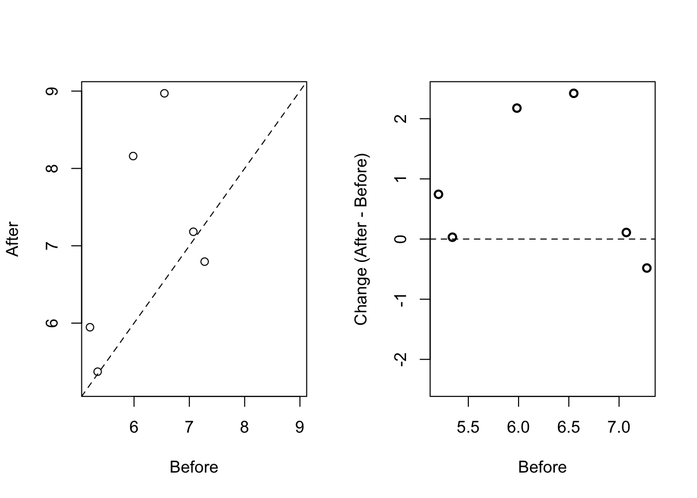
or line plots
Line plots are not a bad choice, although they can be harder to follow than the previous two. Boxplots show you the increase, but lose the paired information.
z <- rep(c(0,1), rep(6,2))
par(mfrow=c(1,2))
plot(z, c(before, after),
xaxt="n", ylab="Response",
xlab="", xlim=c(-0.5, 1.5))
axis(side=1, at=c(0,1), c("Before","After"))
segments(rep(0,6), before, rep(1,6), after, col=1)
boxplot(before,after,names=c("Before","After"),ylab="Response")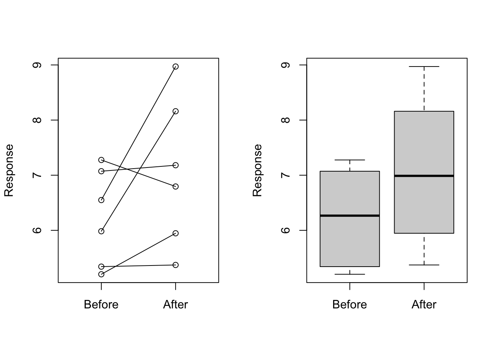
Gratuitous 3D
The figure below shows three curves. Pseudo 3D is used, but it is not clear why. Maybe to separate the three curves? Notice how difficult it is to determine the values of the curves at any given point:

This plot can be made better by simply using color to distinguish the three lines:
x <- read_csv("https://github.com/kbroman/Talk_Graphs/raw/master/R/fig8dat.csv") %>%
as_tibble(.name_repair = make.names)
p <- x %>%
gather("drug", "proportion", -log.dose) %>%
ggplot(aes(x=log.dose, y=proportion,
color=drug)) +
geom_line()
p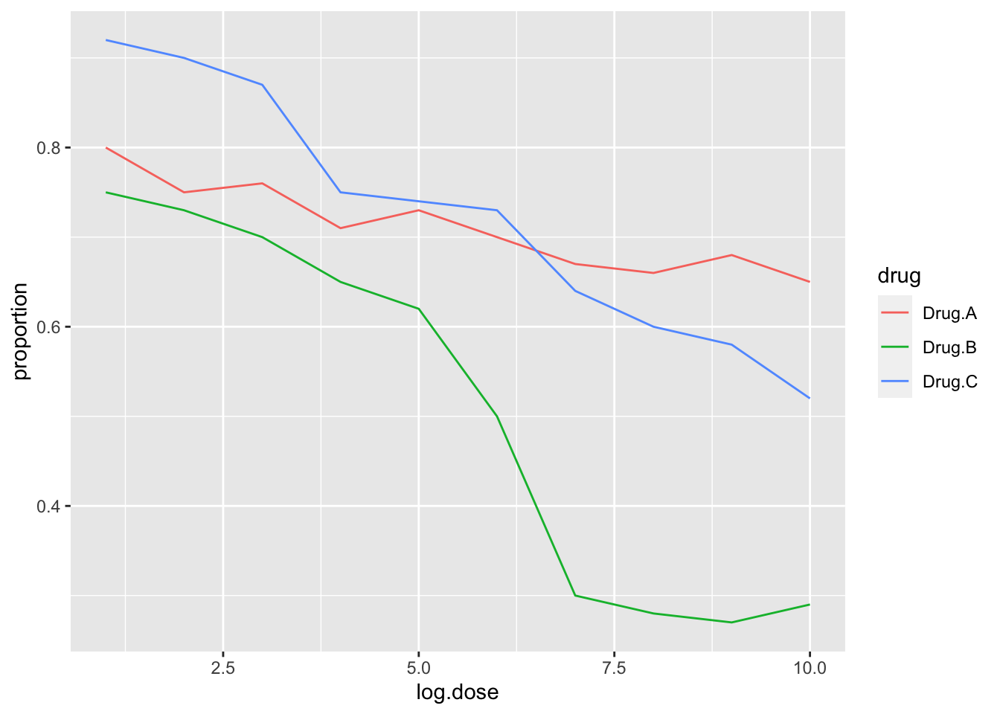
This plot demonstrates that using color is more than enough to distinguish the three lines.
We can make this plot better using the functions we learned above
p + ggtitle("Survival proportion") +
theme(plot.title = element_text(hjust = 0.5),
text = element_text(size = 15))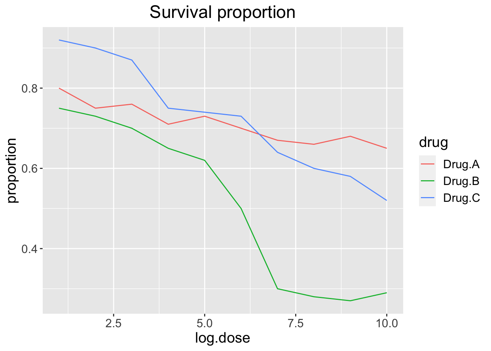
Legends
We can also move the legend inside the plot
p + ggtitle("Survival proportion") +
theme(plot.title = element_text(hjust = 0.5),
text = element_text(size = 15),
legend.position = c(0.2, 0.3))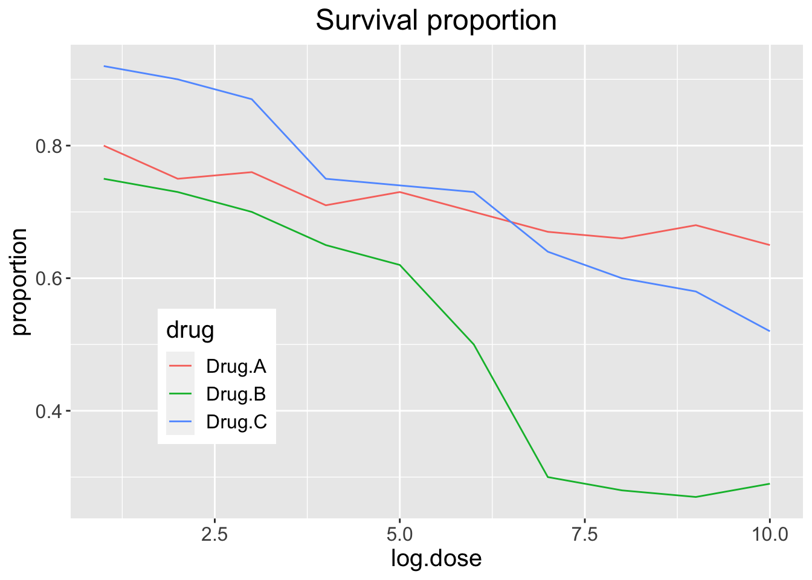
We can also make the legend transparent
transparent_legend = theme(
legend.background = element_rect(fill = "transparent"),
legend.key = element_rect(fill = "transparent",
color = "transparent"))
p + ggtitle("Survival proportion") +
theme(plot.title = element_text(hjust = 0.5),
text = element_text(size = 15),
legend.position = c(0.2, 0.3)) +
transparent_legendToo many significant digits
By default, statistical software like R returns many significant digits. This does not mean we should report them. Cutting and pasting directly from R is a bad idea since you might end up showing a table, such as the one below, comparing the heights of basketball players:
heights <- cbind(rnorm(8,73,3),rnorm(8,73,3),rnorm(8,80,3),
rnorm(8,78,3),rnorm(8,78,3))
colnames(heights)<-c("SG","PG","C","PF","SF")
rownames(heights)<- paste("team",1:8)
heights SG PG C PF SF
team 1 68.88065 73.07480 81.80948 76.60455 82.23521
team 2 70.05272 66.86024 74.64847 72.70140 78.55640
team 3 71.33653 73.63946 81.00483 78.56787 77.86893
team 4 73.36414 81.01021 81.68293 76.90146 77.35226
team 5 72.63738 69.31895 83.66281 81.17280 82.39133
team 6 68.99188 75.50274 79.36564 75.77514 78.68900
team 7 73.51017 74.59772 82.09829 73.95492 78.32287
team 8 73.46524 71.05953 77.88069 76.44808 73.86569We are reporting precision up to 0.00001 inches. Do you know of a tape measure with that much precision? This can be easily remedied:
round(heights,1) SG PG C PF SF
team 1 68.9 73.1 81.8 76.6 82.2
team 2 70.1 66.9 74.6 72.7 78.6
team 3 71.3 73.6 81.0 78.6 77.9
team 4 73.4 81.0 81.7 76.9 77.4
team 5 72.6 69.3 83.7 81.2 82.4
team 6 69.0 75.5 79.4 75.8 78.7
team 7 73.5 74.6 82.1 74.0 78.3
team 8 73.5 71.1 77.9 76.4 73.9Minimal figure captions
Recall the plot we had before:
transparent_legend = theme(
legend.background = element_rect(fill = "transparent"),
legend.key = element_rect(fill = "transparent",
color = "transparent"))
p + ggtitle("Survival proportion") +
theme(plot.title = element_text(hjust = 0.5),
text = element_text(size = 15),
legend.position = c(0.2, 0.3)) +
xlab("dose (mg)") +
transparent_legend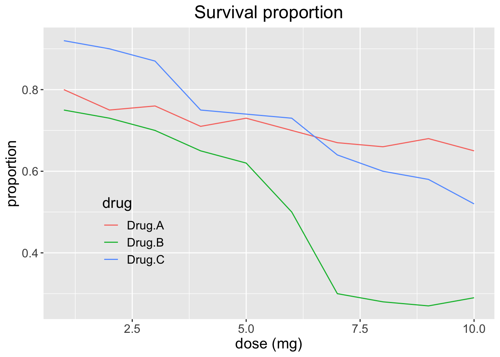
What type of caption would be good here?
When creating figure captions, think about the following:
- Be specific
A plot of the proportion of patients who survived after three drug treatments.
- Label the caption
Figure 1. A plot of the proportion of patients who survived after three drug treatments.
- Tell a story
Figure 1. Drug treatment survival. A plot of the proportion of patients who survived after three drug treatments.
- Include units
Figure 1. Drug treatment survival. A plot of the proportion of patients who survived after three drug treatments (milligram).
- Explain aesthetics
Figure 1. Drug treatment survival. A plot of the proportion of patients who survived after three drug treatments (milligram). Three colors represent three drug treatments. Drug A results in largest survival proportion for the larger drug doses.
Final thoughts data viz
In general, you should follow these principles:
Create expository graphs to tell a story (figure and caption should be self-sufficient; it’s the first thing people look at)
- Be accurate and clear
- Let the data speak
- Make axes, labels and titles big
- Make labels full names (ideally with units when appropriate)
- Add informative legends; use space effectively
Show as much information as possible, taking care not to obscure the message
Science not sales: avoid unnecessary frills (especially gratuitous 3D)
In tables, every digit should be meaningful
Some further reading
- N Cross (2011). Design Thinking: Understanding How Designers Think and Work. Bloomsbury Publishing.
- J Tukey (1977). Exploratory Data Analysis.
- ER Tufte (1983) The visual display of quantitative information. Graphics Press.
- ER Tufte (1990) Envisioning information. Graphics Press.
- ER Tufte (1997) Visual explanations. Graphics Press.
- ER Tufte (2006) Beautiful Evidence. Graphics Press.
- WS Cleveland (1993) Visualizing data. Hobart Press.
- WS Cleveland (1994) The elements of graphing data. CRC Press.
- A Gelman, C Pasarica, R Dodhia (2002) Let’s practice what we preach: Turning tables into graphs. The American Statistician 56:121-130.
- NB Robbins (2004) Creating more effective graphs. Wiley.
- Nature Methods columns